Software Design Description
Inhoudsopgave
Introductie
De opdracht staat (kort) beschreven in het SRS. Om geen duplicate informatie te verstrekken, kunt u naar de Introductie Opdracht gaan.
Doel van dit document
- Software Architectuur in grote lijnen beschrijven a.d.h.v. een componentdiagram.
- Systeem operaties over de individuele componenten beschrijven a.d.h.v. Component Sequence Diagrams.
- Een vertaling maken van concepten in het probleem(/opdracht)-domein naar code-concept a.d.h.v. een Design Class Diagram
- 'Gedrag' van het systeem beschrijven a.d.h.v. andere interactie-diagrams zoals Activity diagrams en een statemachine.
- Gemaakte keuzes in het ontwerp beargumenteren en verantwoorden.
Component Diagram
Iteratie 1
 Path to image : Component_Diagram_v1-0-1
Path to image : Component_Diagram_v1-0-1
Iteratie 2
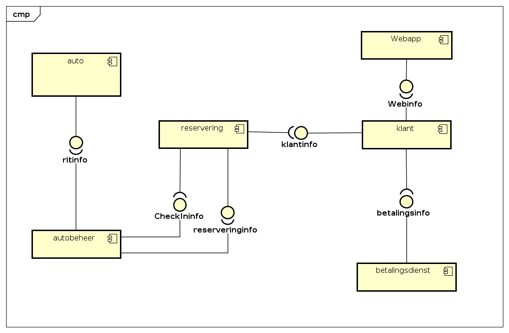
Path to image : Component_Diagram_v1-0-2
{kind=link}
Overzicht van alle componenten
* Provided Interface
* * required Interface
| Component | * Provided | ** Required | Component image with interfaces |
|---|---|---|---|
| auto | RitInfo | 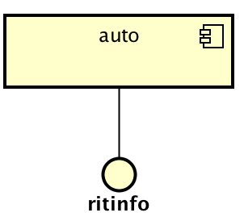 | |
| autobeheer | CheckInInfo | ritInfo, reserveringsinfo |  |
| reservering | reserveringsinfo | CheckInInfo, klantInfo |  |
| webapp | webInfo |  |
|
| klant | klantInfo | webInfo, betalingsInfo |  |
| betalingsdienst | betalingsInfo |  |
Detailed Design Description
Hieronder worden de verschillende onderdelen verder uitgelegd.
Om de beschrijvingen structuur te geven hanteren bespreken we de onderdelen in hoofdlijn over de Use Cases. Hierbij geldt dat het soms relevant kan zijn om uit te wijden over ook andere onderdelen. Hierdoor kan overlap ontstaan.
Detailed Design Descriptions Format
* korte beschrijving van de koppeling tussen:
- De Use Case.
- Het ontworpen component.
* Een component Sequence Diagram
* Eventueel een Activity Diagram
* Ontwerpbeslissingen met eventuele Design Patterns.
Overzicht keuze type diagram
| UseCase-Code | SSD | CSD | AD | SM | |
|---|---|---|---|---|---|
| UC-1 | X | X | |||
| UC-2 | X | X | X | X | |
| UC-3 | X | X | |||
| UC-4 (*CRUD) | X | X | |||
| UC-5 (*CRUD) | X |
*CRUD = Create Read Update Delete
UC 1 Reserveringscomponent
Short description
Het reserveren van een auto bestaat uit grofweg 3 hoofd-onderdelen:
- Inloggen en verificatie van de klant.
- Criteria aangeven voor het huren van een huurauto
- Bevestigen van de reservering, praktische informatie verschaffen.
Component Sequence Diagram Iteratie 1
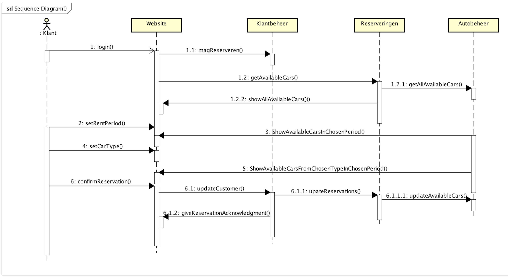
Path to image : CSD_UC1_reserverenAuto_iteratie1
{kind=link}
Component Sequence Diagram Iteratie 2

Path to image : CSD_UC1_rserveerauto_iteratie2
Design decisions
Inloggen en verificatie van de klant. 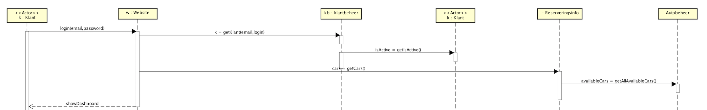
Criteria aangeven voor het huren van een huurauto

Bevestigen en praktische informatie 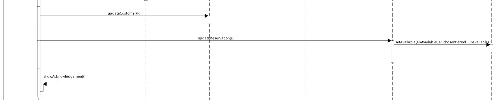
UC 2 Autocomponent
Short description
Het gebruiken van een auto bestaat 3 hoofd-onderdelen:
-
Openen van een auto a.d.h.v. verificatie op de reservering
-
Het maken van 1 of meer ritten tijdens de huurperiode
-
Het doorvoeren van de gemaakte ritten na de huurperiode.
Om de flow van activiteiten extra te verduidelijken hebben we voor deze Use Case ook een activity diagram gemaakt.
Activity Diagram
 Path to image : AD_Gebruik_Auto_iteratie_2
Path to image : AD_Gebruik_Auto_iteratie_2
Component Sequence Diagram Iteratie 1

Path to image : CSD_UC2-gebruikAuto_iteratie_1
Component Sequence Diagram Iteratie 2

Path to image : CSD_UC2-gebruikAuto_iteratie_2
State Machine Diagram
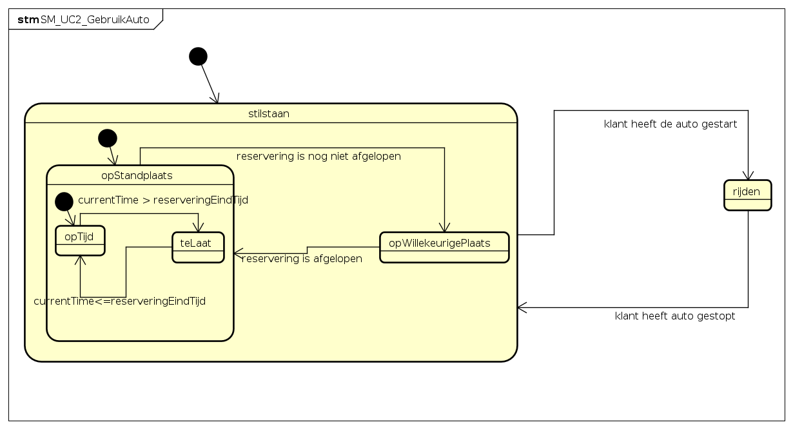
Design decisions
Openen van een auto a.d.h.v. verificatie op de reservering
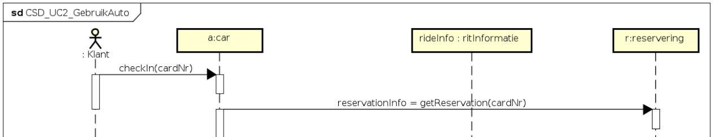
Het maken van 1 of meer ritten tijdens de huurperiode
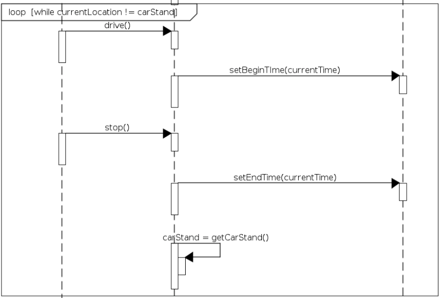
Het doorvoeren van de gemaakte ritten na de huurperiode.
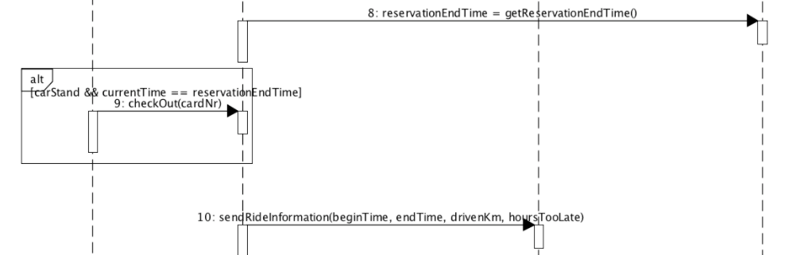
Toevoegen van een boete
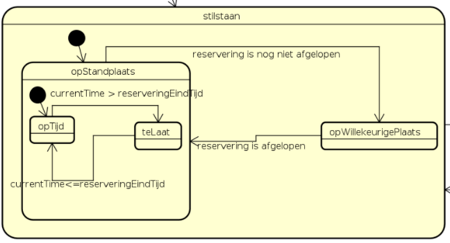
UC 3 Betalingscomponent
Short description
Het betalen van een gehuurde auto gebeurt, zoals vaker benoemd, via een automatische afschrijving.
We hebben tijdens de eerste iteratie een gesteld dat het betalingssyteem actief 'vraagt' aan RedCars welke betalingen vericht moeten worden. Tijdens de tweede iteratie hebben we de actor betalingssyteem veranderd naar van primair naar secundair. Daarbij hebben we tijd als primaire actor toegevoegd (zie toelichting SRS)
Component Sequence Diagram

Path to image : CSD_UC3_Betalen_iteratie_2
Design decisions
Van tijd naar betalingsdienst
De abstracte actor Tijd triggert de betalingsdienst. De betalingsdienst vraagt aan het Reserveringsinfo component om de volledige betaling te berekenen.
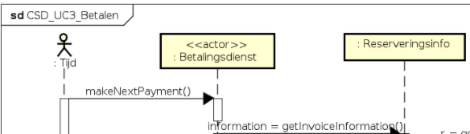
Facade Controller
Wij hebben voor de functionaliteit van het betalingscomponent een probleem opgelost door middel van een Design Pattern. Wij liepen er tegen aan dat het betalingscomponent, na het gebruik van de auto, het totaalbedrag moet weten. Om ervoor te zorgen dat we geen Hogere Coupling en Lagere Cohesie zouden krijgen door het betalingscomponent direct verbinding te laten leggen met de benodigde onderdelen om het totaal bedrag uit te rekenen.
Hierdoor hebben we een 'pure artificial' component bedacht, reserveringsinfo. Dit component is de brug tussen het betalingssysteem en de andere componenten (zie onderstaande afbeelding).

UC 4 Klantcomponent
Short description
Het klant component wordt gebruikt om klanten mee te beheren.
Component Sequence Diagram Create
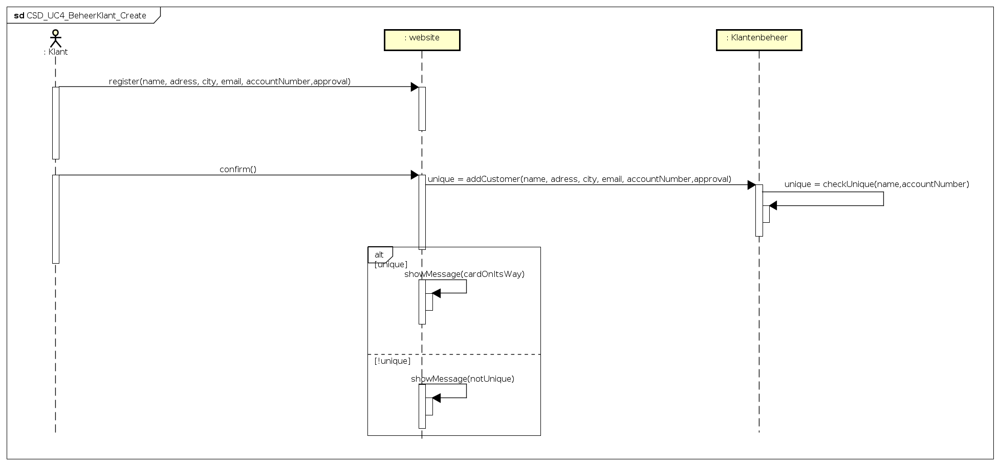
Path to image : CSD_UC4_BeheerKlant_Create
{kind=link}
Design decisions
happy flow

Toevoegen nieuwe klant aan systeem en controle op uniek account.
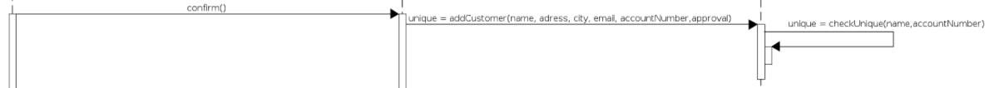
Component Sequence Diagram Read
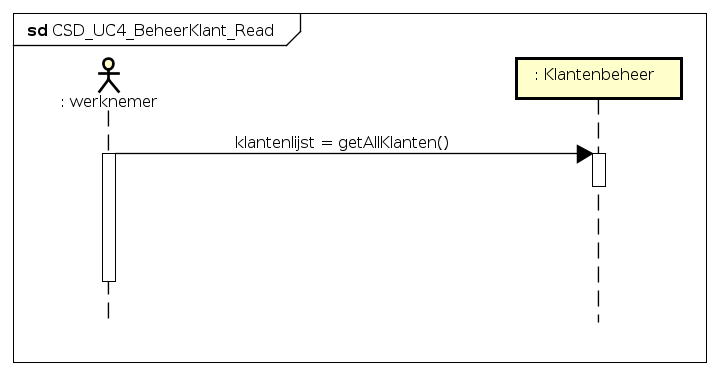
Path to image : CSD_UC4_BeheerKlant_Read
{kind=link}
Component Sequence Diagram Update

Path to image : CSD_UC4_BeheerKlant_Update
Component Sequence Diagram Delete

Path to image : CSD_UC4_BeheerKlant_Delete
UC 5 Autobeheercomponent
Short description
Onderstaande activity diagrams beschrijven de flow van het beheren van een auto.
Activity Diagram Create

Activity Diagram Read

Activity Diagram Update

Activity Diagram Delete
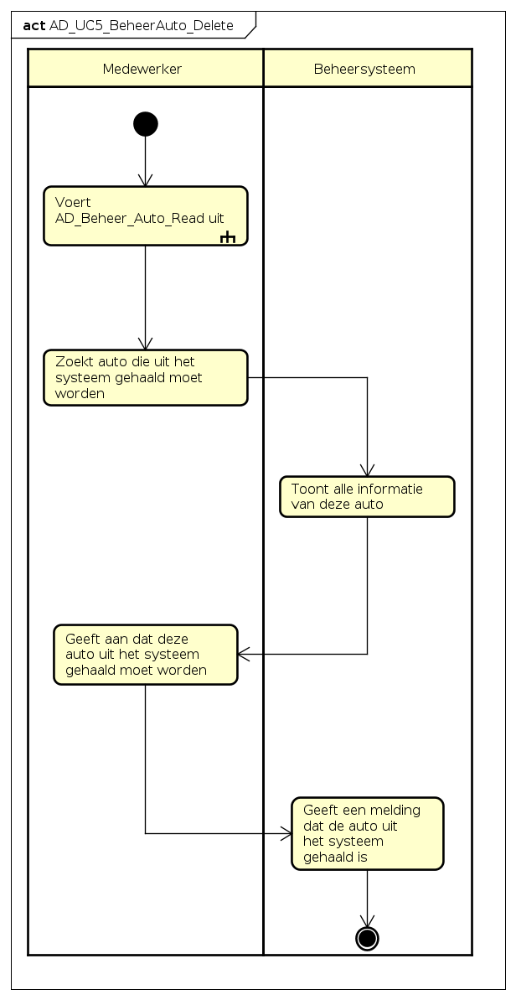
{kind=link}
Design Class Diagram
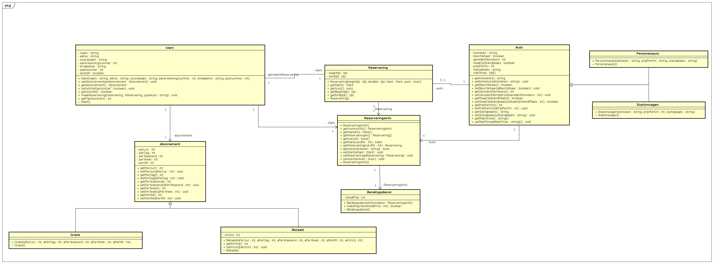
Path to image : Design Class Diagram_iteratie_2
{kind=link}